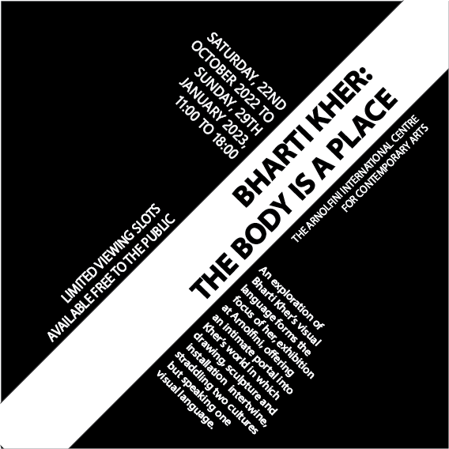
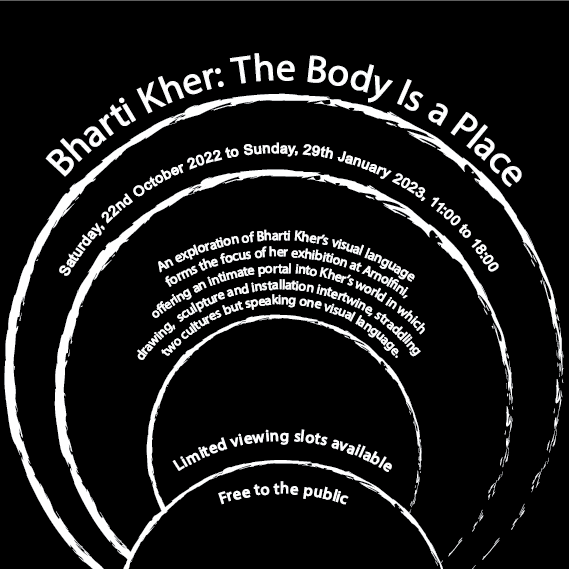
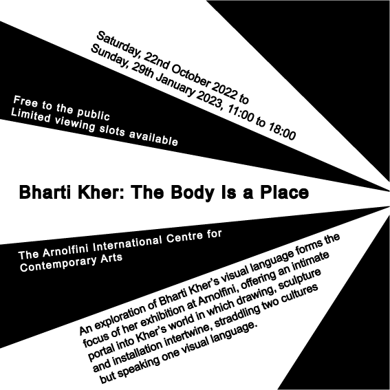
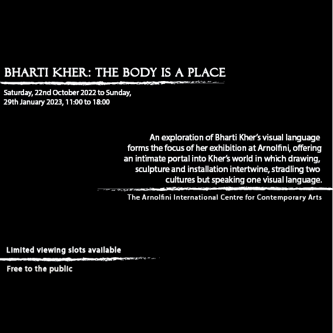
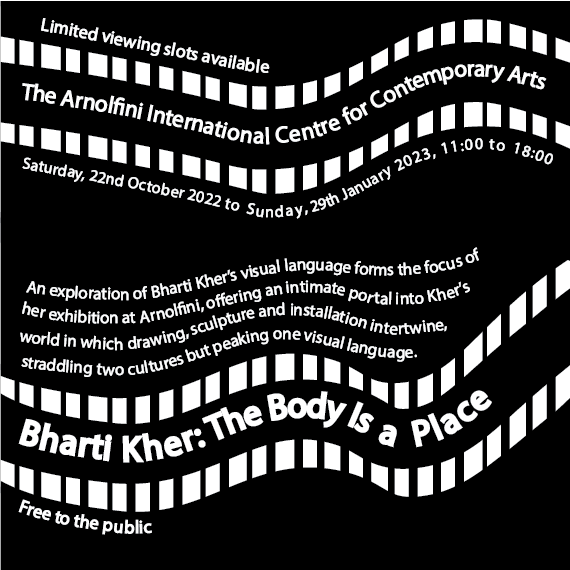
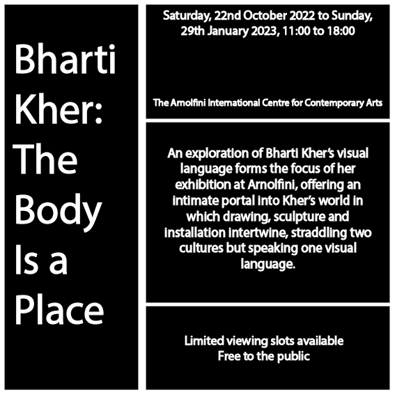

Axial Design
Axial typography follows the principle that text is divided by an imaginary line that follows an axis. In my design there is a line on the diagonal axis with text on either side
Bilateral Design
.png)
Similarly to axial designs, bilateral designs follow a line however the text is arranged symmetrically on the line rather than divided by it. In my design the text is arranged in the center with a black and white scheme to split up the text and make it easier to read
Dialational Design
Text in dilational designs is set alon circular paths to form a curve around a common point. My design the text is formed in curves , circuling around a point at the bottom of the design
Bilateral Design
Content is spread out or radiating from a central common center and makes the text look like its 'coming toether'. In my design the text is directed at a common point on the right-hand side and seperated by a black and white scheme for easy viewing.
Modular Design
Modular designs use repeating structures to break up and seperate content. This can be with shapes or paragraphs for example. My design involves text aligned to the left and right border and is broken up using 3 simple lines making it easier to read.
Random Design
.png)
Random designs follow no specific rules or patterns. It may appear fractured and at off angles. In my design i have used a variety of techniques, where no section of text is aligned. i have arranged the text at different angles with different forms to create a random design.
Transitional Design
Transitional designs have the idea that text will flow in a natural way. It may look unorganised and can be shown with angles, shapes and text My design uses curved lines to allow the text to flow along the lines in a a natural way
Grid Design
Grid designs use horizontal and vertical lines as a layout guide. This encourages consitency and makes it easier to relate items. I have dones this by using bold white lines to seperate the text in a grid format.